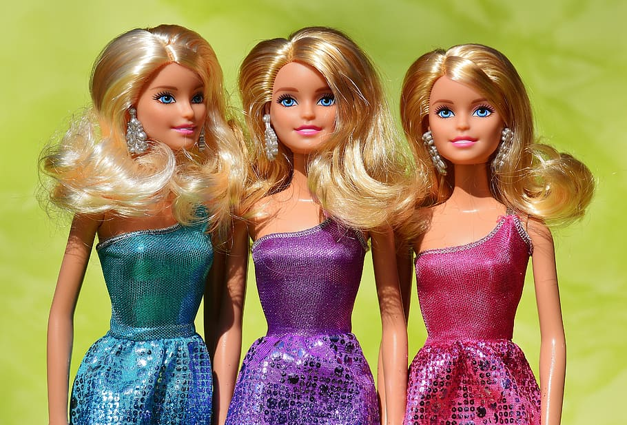

History
Throughout her history, Barbie has sparked conversations about gender roles, body image, and representation in the media and toy industry. She remains a cultural icon and has adapted to changing times while retaining her status as a beloved and influential toy. Here is a brief history of Barbie thoughout the years:
- 💕1959: Barbie made her debut on March 9th at the American International Toy Fair in New York City. She was created by Ruth Handler, co-founder of Mattel, who was inspired by watching her daughter Barbara play with paper dolls and imagining adult lives for them. Barbie's full name is Barbara Millicent Roberts.
- 💕Early 1960s: Barbie quickly gained popularity due to her unique adult-like appearance and various fashion outfits. She was marketed as a teenage fashion model and came with different career-themed outfits, reflecting the evolving roles of women in society.
- 💕1961: Barbie's first significant addition was introduced - her boyfriend Ken Carson. He was named after Ruth Handler's son.
- 💕Mid-1960s: Barbie expanded her career options with new outfits and accessories representing a wide range of professions, from doctor to astronaut. This reflected the changing aspirations of girls during that time.
- 💕Late 1960s to 1970s: Barbie's appearance began to diversify with the introduction of different ethnicities and hairstyles. The "Malibu Barbie" of the 1970s had a tanned complexion and more casual style.
- 💕1980s: Barbie's style became even more vibrant, reflecting the pop culture of the era. She also took on more active and adventurous roles, such as rock star and athlete.
- 💕1990s: Barbie's design continued to evolve, with more realistic body proportions and a focus on promoting positive messages and role models. This decade also saw the introduction of Barbie dolls based on popular movie characters and celebrities.
- 💕2000s: Barbie became even more diverse, with various skin tones, body types, and hairstyles introduced to better represent a wider range of people. Mattel also started to create Barbie dolls inspired by real-life inspiring women.
- 💕2010s: Mattel launched the "Barbie Fashionista" line, which included even more diverse body shapes, skin tones, and hairstyles, as well as different abilities like dolls in wheelchairs. The "Career of the Year" Barbie series spotlighted various professions.
- 💕2020s: Barbie's evolution continued with an emphasis on inclusivity, empowerment, and diversity. Barbie dolls celebrating real-life role models and historical figures remained popular, and efforts to create a more realistic and relatable image of beauty and body image continued.